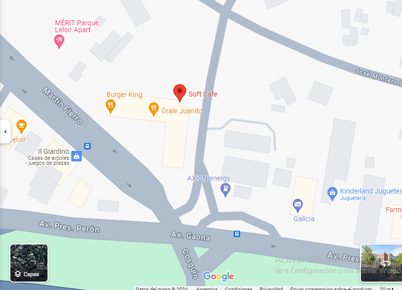

Bienvenido al sitio oficial de Soft Cafe Leloir
Gracias por visitarnos.
Puedes encontrar más información en nuestras redes:
Seguinos en instagram:@softcafe.leloir
Seguinos en facebook:@softcafeleloir


Ir a Google Maps
